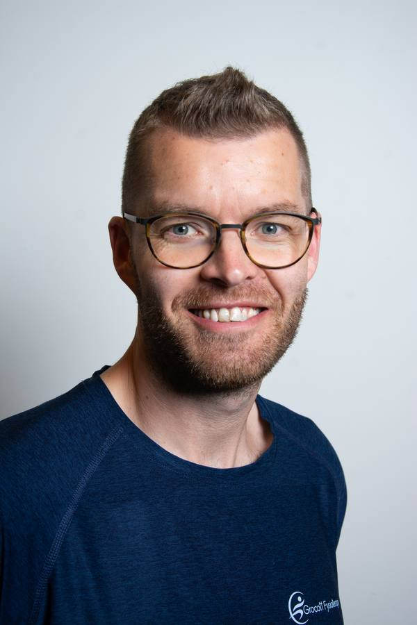
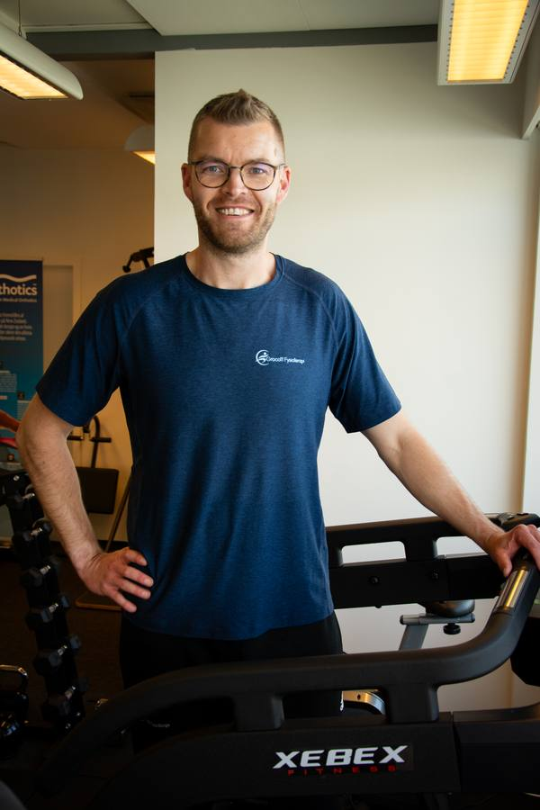

Høj faglighed
Jeg videreuddanner mig løbende inden for faget, da vi aldrig er færdige med at lære og udvikle os. Det jeg anbefaler, bygger på min uddannelse, mine kurser og kroppens biomekanik.
Autoriseret fysioterapeut i Langeskov med 11 års erfaring. Vi betjener klienter fra Kerteminde, Nyborg, Odense og hele Østfyn.

Det er mig der driver Grocott Fysioterapi, hvorfor det er mig I vil møde i klinikken.
Jeg har altid interesseret mig for kroppen, idræt og mennesker, hvorfor det var helt naturligt for mig at tage uddannelsen som fysioterapeut. Inden da tog jeg uddannelsen til Elite badminton træner på Aalborg Trænerakademi og derefter gik turen til Fyn for at studere Idræt og Sundhed på SDU, hvor jeg læste i 2,5 år.
Jeg blev færdiguddannet som fysioterapeut i 2012 og lige siden har jeg videreuddannet mig indenfor faget, hvilket jeg altid vil fortsætte med, da vi aldrig er færdige med at lære og udvikle os.

Jeg bor selv privat i Langeskov med min hustru, vores 2 drenge og vores hund. Det har længe været en drøm at åbne min egen klinik, hvor jeg kan sætte mit helt eget præg på fysioterapien.
I min tid som fysioterapeut, har jeg blandt andet været omkring Socialpsykiatrien i Roskilde Kommune og Socialafdelingen i Kerteminde Kommune. Her var der stort fokus på at opbygge en god relation, skabe tryghed og skabe de rigtige rammer, for at borgerne havde de rette tilbud i kommunen med fokus på sundhed og fysisk aktivitet. Samtidig skulle jeg som fagperson turde tage de "svære samtaler", men også formå at tilpasse min intervention til den givne situation.
Den dag i dag, hvor jeg arbejder som selvstændig fysioterapeut og med et helt andet fokus, kan jeg dog stadig mærke værdien af de erfaringer jeg har taget med mig i mine konsultationer med mine klienter.
Siden 2018 har jeg været selvstændig fysioterapeut og været indlejer hos Din Fysioterapi i Vissenbjerg. Her har jeg beskæftiget mig med individuelle behandlingsforløb, holdtræning, genoptræning og forebyggende træningsforløb.
De vigtigste skridt fra studiestart over udlandserfaring til klinikken,
du finder i Langeskov i dag.
Et 2,5-årigt studie ved Syddansk Universitet, hvor grundlaget for forståelsen af kroppens biomekanik blev lagt. Fokus på træningslære, fysiologi og rehabilitering efter skader.
Afsluttet professionsbachelor som fysioterapeut. Klinisk praktik på Odense Universitetshospital og hos to førende privatklinikker i regionen.
Tre år som tilknyttet fysioterapeut for OB's ungdomsafdeling. Erfaring med screening, skadesprofylakse og genoptræning af unge elitespillere.
Dybdegående efteruddannelse i manuel mobilisering og McKenzie-metoden til diagnosticering og behandling af ryg- og nakkesmerter.
Klinikken åbner i Langeskov Centret med ét tydeligt mål: høj faglighed, mere tid til hver patient og færre konsultationer for at opnå resultatet.
Klinikken bliver officiel leverandør af Formthotics-skoindlæg, en evidensbaseret løsning til fod-, knæ- og rygproblematikker.
Klinikken er vokset til at modtage patienter fra hele Fyn og omegn. Filosofien er stadig den samme, bare bygget oven på endnu flere års erfaring.
Jeg videreuddanner mig løbende inden for faget, da vi aldrig er færdige med at lære og udvikle os. Det jeg anbefaler, bygger på min uddannelse, mine kurser og kroppens biomekanik.
Tid er ofte ikke en luksus i sundhedssystemet. Jeg har valgt at arbejde uden for overenskomst for at kunne afsætte den nødvendige tid alt efter din problematik.
Et fysioterapeutisk forløb med høj faglighed og mere tid giver et langt bedre resultat. I sidste ende betyder det reduceret antal konsultationer og øget selvstændighed hos klienten.
Jeg arbejder ud fra et holistisk syn og ser kroppen som en helhed. En behandling handler ikke kun om at fjerne en smerte her og nu, men også om at finde roden til problemet på den lange bane.
Vi ligger i Langeskov Centret med gratis parkering lige uden for døren. Kun 15 minutters kørsel fra Odense, 20 fra Nyborg og 30 fra Svendborg.